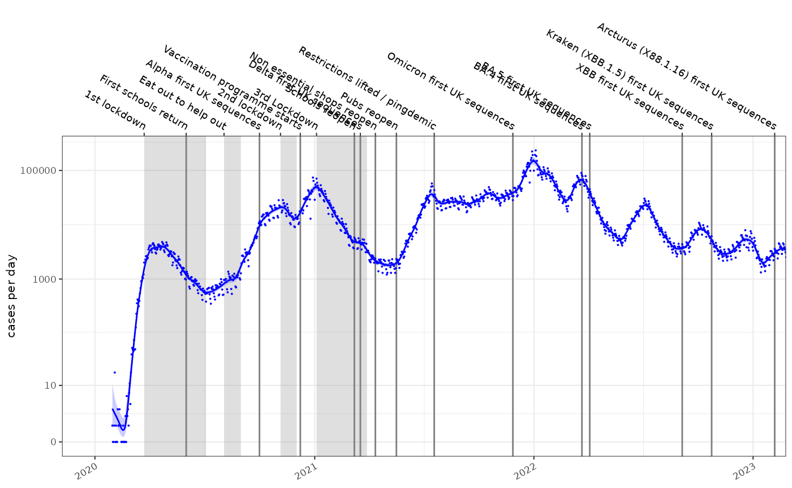
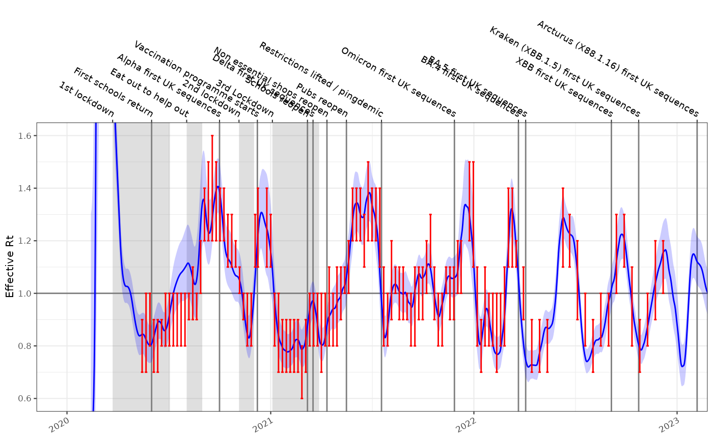

Estimating the reproduction number from modelled incidence
Source:vignettes/rt-from-incidence.Rmd
rt-from-incidence.RmdRobert Challen 1,2; Leon Danon 1,2;
- Engineering Mathematics, University of Bristol, Bristol, UK
- AI4CI
Introduction
If we have estimated the incidence of a disease \(I_t\) using a poisson rate using maximum likelihood estimators, the rate is typically a log-normally distributed with parameters \(\mu\) and \(\sigma\). Such a fitted model is shown below on a log1p scale, for the COVID-19 epidemic in England:

It is appealing to use this modelled incidence estimate to calculate an estimate of the reproduction number, \(R_t\). Incidence models can be derived in a number of ways, they are easily inspected for error and can be made tolerant of missing values and outliers.
Methods
To use a modelled estimate of incidence to predict \(R_t\) we need to propagate uncertainty in incidence into our \(R_t\) estimates. To calculate \(R_t\) we can use the backwards-looking renewal equations which incorporate the infectivity profile of the disease (\(\omega\)) at a number of days after infection (\(\tau\)):
\[ I_t \sim Lognormal(\mu_t,\sigma_t) \\ R_t = \frac{I_t}{\sum_{\tau}{\omega_{\tau}I_{t-\tau}}} \]
giving us:
\[ R_t = \frac{Lognormal(\mu_t,\sigma_t)}{\sum_{\tau}{ Lognormal( \mu_{t-\tau} + log(\omega_{\tau}) , \sigma_{t-\tau}) }} \\ \]
The sum of \(i\) such log normal distributions can be approximated by another log normal (Lo 2013) with parameters \(\mu_Z\) and \(\sigma_Z\).
\[ \begin{align} S_+ &= \operatorname{E}\left[\sum_i X_i \right] = \sum_i \operatorname{E}[X_i] = \sum_i e^{\mu_i + \sigma_i^2/2} \\ \sigma^2_{Z} &= 1/S_+^2 \, \sum_{i,j} \operatorname{cor}_{ij} \sigma_i \sigma_j \operatorname{E}[X_i] \operatorname{E}[X_j] = 1/S_+^2 \, \sum_{i,j} \operatorname{cor}_{ij} \sigma_i \sigma_j e^{\mu_i+\sigma_i^2/2} e^{\mu_j+\sigma_j^2/2} \\ \mu_Z &= \ln\left( S_+ \right) - \sigma_{Z}^2/2 \end{align} \]
The sum term in the denominator of the renewal equations consists of a set of correlated scaled log normal distributions with both scale and correlation defined by the infectivity profile (\(\omega\)). In our case \(cor_{ij}\) can be equated to the infectivity profile (\(\omega_{|i-j|}\)) when \(i \neq j\) and 1 when \(i = j\). \(\mu_i\) is \(\mu_{t-\tau} + ln(\omega_{\tau})\).
\[ \begin{align} S_{t} &= \sum_{s=1}^{|\omega|} { \omega_s e^{\mu_{t-s} + \sigma_{t-s}^2/2 }} \\ \sigma_{Z,t} &= \sqrt{ \frac{ \sum_{i,j=1}^{|\omega|} { (\omega_{|i-j|}+I(i,j)) \omega_i \omega_j (\sigma_{(t-i)} e^{\mu_{(t-i)}+\sigma_{(t-i)}^2/2}) (\sigma_{(t-j)} e^{\mu_{(t-j)}+\sigma_{(t-j)}^2/2)} } }{S_{t}^2} } \\ \mu_{Z,t} &= \log\left( S_{t} \right) - \sigma_{Z,t}^2/2 \end{align} \]
\(\mu\) is the central estimate of case counts on the log scale, and its standard deviation can also be large. There are numerical stability issues dealing with terms involving \(e^{(\mu+\sigma^2)}\), however keeping everything in log space and using optimised log-sum-exp functions this can be made computationally tractable.
\[ \begin{align} \log(S_{t}) &= \log(\sum_{s=1}^{|\omega|} { e^{\mu_{t-s} + \sigma_{t-s}^2/2 + \log(\omega_s) }}) \\ \log(T_{t,\tau}) &= \log(\omega_{\tau}) + \log(\sigma_{(t-{\tau})}) + \mu_{(t-{\tau})} + \sigma_{(t-{\tau})}^2/2) \\ \log(cor_{i,j}) &= \log(\omega_{|i-j|}+I(i=j)) \\ \log(\sigma_{Z,t}^2) &= \log( \sum_{i,j=1}^{|\omega|} { e^{ \log(cor_{i,j}) + \log(T_{t,i}) + \log(T_{t,j}) } }) - 2 \log(S_{t}) \\ \mu_{Z,t} &= \log( S_{t} ) - \sigma_{Z,t}^2/2 \end{align} \]
N.B. if we assume the individual estimates of the incidence are uncorrelated this simplifies to:
\[ \begin{align} \log(\sigma_{Z,t}^2) &= \log( \sum_{\tau=1}^{|\omega|} { e^{ 2 \log(T_{t,\tau}) } }) - 2 \log(S_{t}) \end{align} \]
Empirically there is not a huge amount of difference in estimates between these two forms. If the infectivity profile \(\omega\) is spread out over a large period then the correlation matrix will be \(O(\omega)^2\) which may predicate this simpler order 1 formulation.
With \(\mu_{Z,t}\) and \(\sigma_{Z,t}\) we are left with the final derivation of \(R_t\), giving us a distributional form of \(R_t\) incorporating uncertainty from modelled incidence estimates:
\[ \begin{align} R_t &= \frac{Lognormal(\mu_t,\sigma_t)} {Lognormal( \mu_{Z,t}, \sigma_{Z,t})} \\ \mu_{R_t} &= \mu_t - \mu_{Z,t} \\ \sigma_{R_t} &= \sqrt{\sigma_t^2+\sigma_{z,t}^2} \\ R_t &= Lognormal(\mu_{R_t}, \sigma_{R_t}) \end{align} \]
This is conditioned on a single known infectivity profile. In reality there is also uncertainty in the infectivity profile, however we cannot assume any particular distributional form for this. We can use a range of empirical estimates of the infectivity profile to calculate multiple distributional estimates for \(R_t\) and then combine these as a mixture distribution numerically. To avoid the computation involved however a reasonable approximation for the mixture is a log normal with the same mean and variance as the mixture, as it is likely the individual \(R_t\) estimates will be all very similar. This moment matching should be done using the mean and variance of the \(R_t\) distributions and not the log transformed distribution parameters, \(\mu\) and \(\sigma\):
\[ \begin{align} E[R_t] &= e^{(\mu_{R_t} - \sigma_{R_t}^2/2)} \\ Var[R_t] &= \big[ e^{(\sigma_{R_t}^2)} - 1 \big] \big[ e^{2 \mu_{R_t} + \sigma_{R_t}^2} \big] \\ E[R_t^*] &= \frac{1}{|\Omega|}\sum_{\omega \in \Omega} E[{R_t|\omega}] \\ Var[R_t^*] &= \frac{1}{|\Omega|} \bigg(\sum_{\omega \in \Omega}{Var[R_t|\omega]+E[R_t|\omega]^2}\bigg) - E[R_t^*]^2 \\ \mu^* &= \log\Bigg(\frac{E[R_t^*]}{\sqrt{\frac{Var[R_t^*]}{E[R_t^*]^2}+1}}\Bigg) \\ \sigma_*^2 &= \log\bigg(\frac{Var[R_t^*]}{E[R_t^*]^2}+1\bigg)\\ R_t^* &= Lognormal(\mu_*,\sigma_*) \end{align} \]
Implementation
This method is implemented using the following R function, which is designed for numerical stability and speed. Generating \(R_t\) estimates given modelled incidence typically occurring in:
#> function (mu, sigma, omega, mu_t, sigma_t, cor = TRUE)
#> {
#> omega_m = as.matrix(omega)
#> omega_m = apply(omega_m, MARGIN = 2, rev)
#> tmp = apply(omega_m, MARGIN = 2, function(omega) {
#> log_S_t = .logsumexp(mu_t + sigma_t^2/2 + log(omega))
#> log_T_t_tau = mu_t + sigma_t^2/2 + log(omega) + log(sigma_t)
#> if (cor) {
#> n = length(omega)
#> idx = 0:(n^2 - 1)
#> i = idx%/%n
#> j = idx%%n
#> log_cor_ij = c(0, log(omega))[abs(i - j) + 1]
#> log_var_Zt_ij = log_cor_ij + log_T_t_tau[i + 1] +
#> log_T_t_tau[j + 1]
#> }
#> else {
#> log_var_Zt_ij = 2 * log_T_t_tau
#> }
#> log_var_Zt = .logsumexp(log_var_Zt_ij) - 2 * log_S_t
#> var_Zt = exp(log_var_Zt)
#> mu_Zt = log_S_t - var_Zt/2
#> return(c(mu_Rt = mu - mu_Zt, var_Rt = sigma^2 + var_Zt))
#> })
#> if (ncol(tmp) == 1) {
#> mu_star = tmp[1]
#> sigma2_star = tmp[2]
#> mean_star = exp(mu_star + sigma2_star/2)
#> var_star = (exp(sigma2_star) - 1) * exp(2 * mu_star +
#> sigma2_star)
#> }
#> else {
#> means = exp(tmp[1, ] + tmp[2, ]/2)
#> vars = (exp(tmp[2, ]) - 1) * exp(2 * tmp[1, ] + tmp[2,
#> ])
#> mean_star = mean(means)
#> var_star = mean(vars + means^2) - mean_star^2
#> mu_star = log(mean_star/sqrt((var_star/mean_star^2) +
#> 1))
#> sigma2_star = log((var_star/mean_star^2) + 1)
#> }
#> sigma_star = sqrt(sigma2_star)
#> return(tibble::tibble(rt.mu = mu_star, rt.sigma = sigma_star,
#> rt.fit = mean_star, rt.se.fit = sqrt(var_star), rt.0.025 = stats::qlnorm(0.025,
#> mu_star, sigma_star), rt.0.5 = stats::qlnorm(0.5,
#> mu_star, sigma_star), rt.0.975 = stats::qlnorm(0.975,
#> mu_star, sigma_star)))
#> }
#> <bytecode: 0x614726aa12a8>
#> <environment: namespace:growthrates>Results
Testing this against the incidence model shown above, and comparing the results to the SPI-M-O consensus \(R_t\) estimates gives us the following time-series for England. This has not been formally evaluated but qualitatively is a good fit. This single time series with 1410 time points took around 3 seconds to fit, which opens up the possibility of performing \(R_t\) estimates in fine grained geographical or demographic subgroups.
#> user system elapsed
#> 2.413 0.002 2.415
Conclusion
We present a methodology for deriving \(R_t\) from modelled estimates of incidence while propagating uncertainty. We demonstrate it produces satisfactory qualitative results against COVID-19 data. This method is relatively quick, fully deterministic, and can be used on top of any statistical models for estimating incidence which use logarithmic link functions.